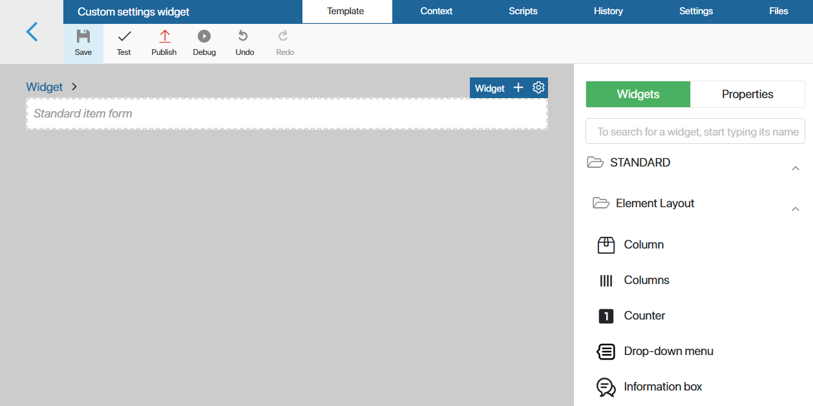
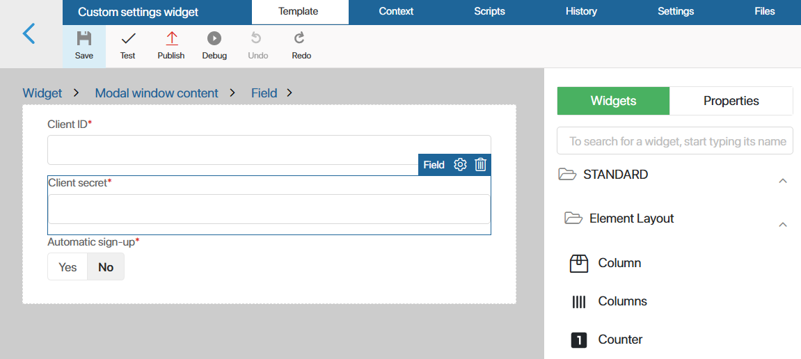
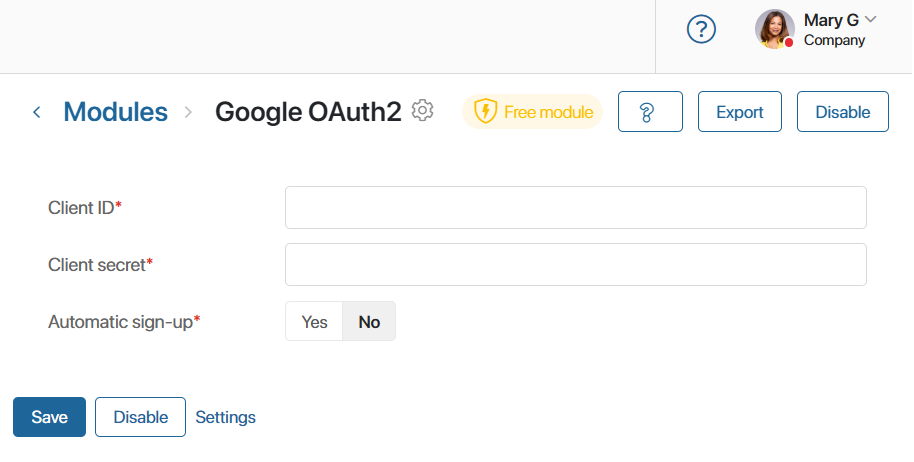
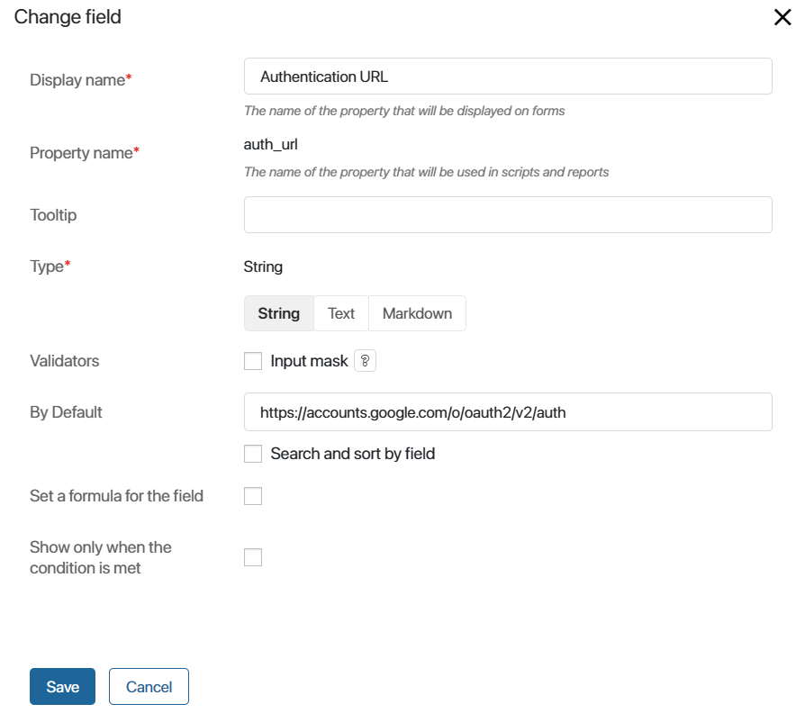
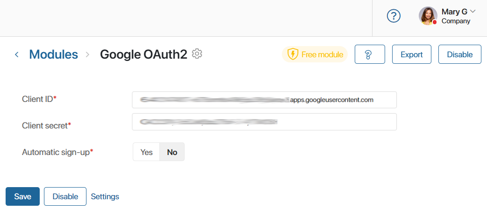
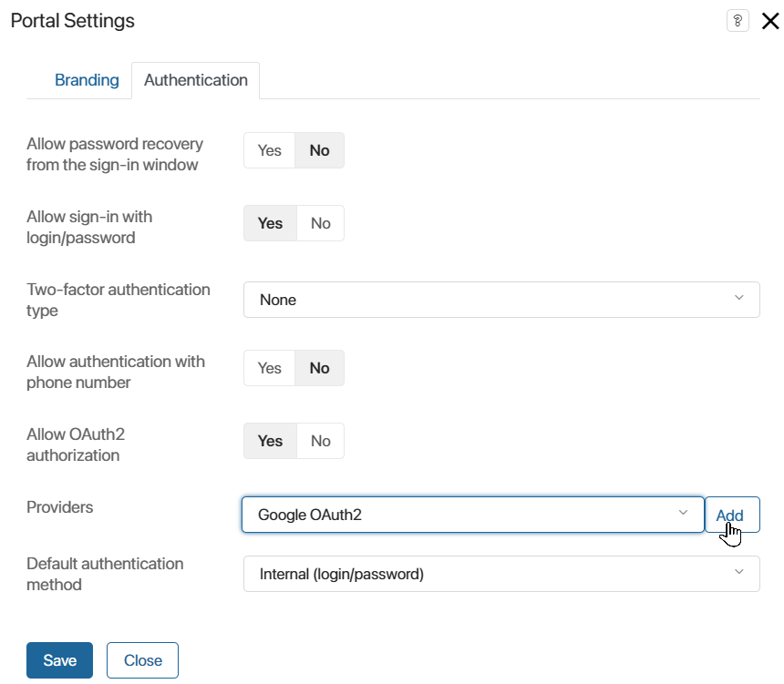
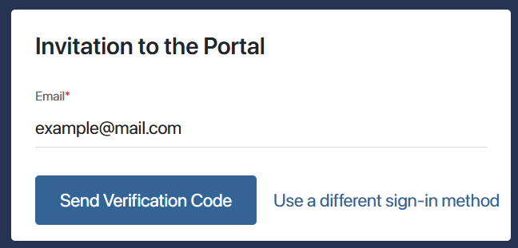
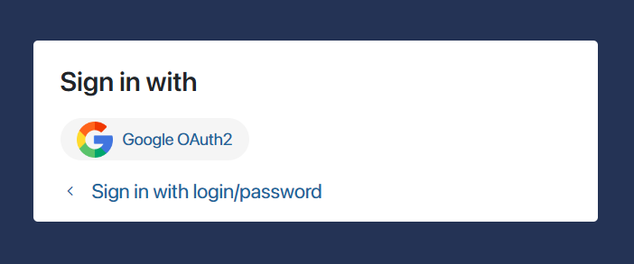
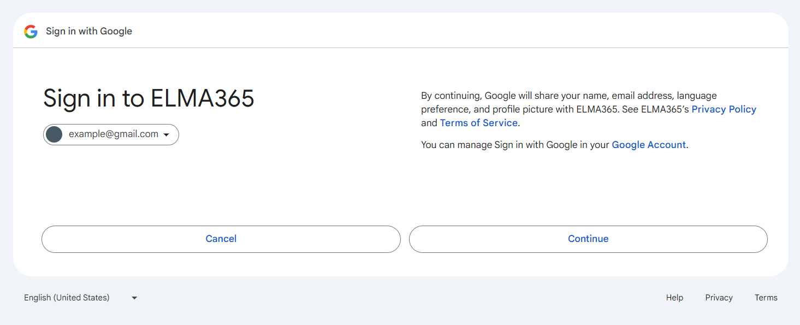
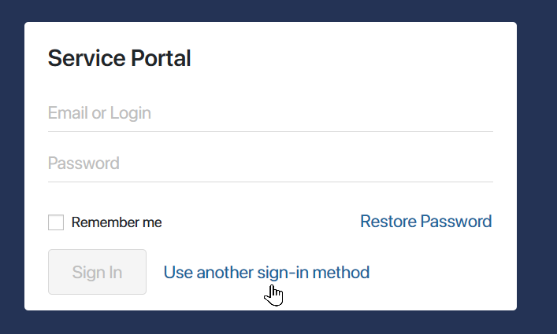

By default, users sign in to BRIX or external portals using their login and password, but you can set up registration and authentication via external services, such as social networks or a Google account. To do that, you need to create and configure an OAuth2 custom module. When the module is enabled, a new sign-in method will become available to users in BRIX. You can also connect the module to each portal in the company. In addition, you can configure the authentication module when connecting email.
начало внимание
Only users included in the Administrators group can create and configure modules.
конец внимание
Create and configure the module
To create a new module, go to Administration > Modules and click +Module. In the opened window, select Create. Enter information about the module and click the Create button. Read more in the Create a custom module article.
Add necessary settings
Add the necessary settings to the module. These are global parameters that will be used in module scripts.
Go to the Settings tab, click +Add, and create the required number of properties to store the settings values.
The displayed property names are arbitrary. However, the property names must match the names given below in brackets, as they are used to identify the module type.
For the module to work correctly, add the following properties of the String type:
- Client ID (
client_id). ID of the application that will request data on the external service. You will get it when you register your application on the external service. - Client secret (
client_secret). Application secret. You will get it when you register your application in the external service. It is used along with theclient_idto get an access token for the external service’s API. - Authentication URL (
auth_url). URL of the authentication page of the external service. The user will be redirected to this page from the application. - Token URL (
token_url). URL in the service. The request for an API access key (access token) will be sent to this address. The request will containclient_idandclient_secret. - Scopes (
scopes). Access that will be granted to the application in the external service by the access token. Scopes are separated with spaces. You must request access to some data that can uniquely identify a user, for example, the email. - Automatic sign-up (
auto_signup). A Yes/No switch type property. If this parameter is set to Yes, internal or external users who don’t exist in the system will be automatically added when they sign in using the external service. In this case, the user page will contain only their email.
You can create other properties you need and set any names you want for them.
When you add all the properties, go to the Main tab and click Save.
Configure the module’s connection page
By default, all the settings you create for a module are added to its connection page. The user sees them when clicking on the module’s name in the Administration workspace.
It is recommended that you make a connection page that includes only parameters that the user enters manually when configuring the module. To find out which parameters have to be set manually and which need to have default values, read the developer’s documentation of the external authentication service.
Let’s see how to set up a connection page for our Google OAuth2 module. The list of its parameters can be found in the previous section of this article. By default, all of them are displayed on the module’s page.
To configure the connection page so that it contains only the parameters set manually by the user, do the following:
- On the Settings tab, click Edit Form. The interface designer will open. Here you need to edit the module settings page.

- Delete the standard item form: select the widget, click the recycle bin icon, and confirm deletion.
- The user will have to enter the Client ID (
client_id) and the Client secret (client_secret) manually. Add them to the form. To add the fields to the form, on the right-side panel of the designer, switch to the Properties tab and drag them to the canvas. - Mark the added fields as required. To do this, select the required property on the modeling canvas and click the gear icon. In the settings window, specify the required option and click Save.
 - In the top panel of the interface designer, click Publish.
Now, on the module connection page, the user will only see the parameters that they need to enter manually.

- Set the default values for the rest of the parameters. To add a value, go to the Settings tab and click a property’s name. In the window that opens, set the desired value for it in the Default field.

For example, in the Google authentication module, set the following values:
auth_url: https://accounts.google.com/o/oauth2/v2/auth.token_url: https://www.googleapis.com/oauth2/v4/token.scopesfor Google authorization: https://www.googleapis.com/auth/userinfo.email.scopesfor Gmail email service authorization: https://mail.google.com/ https://www.googleapis.com/auth/gmail.send.
- Go to the Main tab and click Save.
Add a script
Now you need to add a script to the module. This script reads the values of module settings and forms an authorization request. The request is sent to the external service that returns the user’s ID. The ID is compared with the one in the BRIX database. If they match, the user is signed in.
In the script, the request is sent and the response is received using the oauth2_profile() method. Please note that you cannot change the method name, as the system uses it to recognize the module type.
To add a script:
- Open module settings, go to the API Methods tab and click Edit. The methods editor will open.
- Go to the Scripts tab and write a script based on the following template:
interface AccessTokenData { // data structure to store the access token of the external service
access_token: string;
refresh_token: string;
token_type: string;
expires_in: number;
}
interface OAuth2Profile { // data structure to store the user’s ID
user_id: string;
}
interface OAuth2ResponseFail { // data structure to store the error message
error: string;
error_description: string;
}
async function oauth2_profile (tokenData: AccessTokenData): Promise<OAuth2Profile | OAuth2ResponseFail> {
code of the method that returns the user’s ID or the error message text from the OAuth2 provider
}
Example script for the Google authentication module
interface AccessTokenData { |
- Save and publish the script.
Configure the application in the external service
For the module authentication to run, configure the web-application on the provider side and connect it to the module.
To configure the integration in Google, do the following:
- Go to Google Cloud Platform.
- Create a project or select an existing one. Learn about creating projects in the official Google documentation.
- Configure the OAuth consent screen if you haven’t done so before. Learn more in the official Google documentation.
- In the left-hand menu, select Credentials. At the top of the page, click +Create Credentials and select OAuth client ID in the drop-down.
- In the Application type field, select Web application and specify the application name.
- In the Authorized redirect URIs section, click +Add URI and enter the redirect URL where the user will be redirected in case of successful authentication. Use the following format: <host>/_oauth2/post-message?provider=XXXXXXXX-XXXX-XXXX-XXXX-XXXXXXXXXXXX. As <host>, paste your company’s ID. As the provider’s ID, use the module’s ID.
начало примечание
Note
To allow a user to sign in to BRIX using both the company’s address and an additional one (alias), specify two corresponding URLs for the redirect in the settings on the side of the external service.
If you configure integration with an email service, enter the redirect address in the following format: <host>/_oauth2/post-message.
конец примечание
- Click Create.
- In the window that opens, copy the Client ID and the Client secret.
- Go to BRIX, open the module page, and enable it.
- Specify Client ID and Client secret.

- Save the settings.
The module is ready for use. Now users will be able to log in to BRIX using the account of the connected service if OAuth2 authentication is enabled in the security settings.
You can also configure login via an external service for an external portal. Module operation when clients are authenticated on the portal is described in Example of using the module.
Configure logout in the OAuth2 module
For additional security, you can set up the logout mechanism in your custom OAuth2 module. With this mechanism, the user will be logged out of the linked external provider’s account when they sign out of BRIX.
To configure logout for the module, do the following:
- On the module’s settings page, open the API Methods tab and click Edit. The method editor will open.
- Go to the Scripts tab and describe the logout interface:
interface OAuth2LogoutResponse {
redirect_url: string;
}
- After that, add the
oauth2_logoutmethod:
async function oauth2_logout(): Promise<OAuth2LogoutResponse | OAuth2ResponseFail> {
return <OAuth2LogoutResponse> {
redirect_url: "https://my_idp.com/logout"
};
}
As the redirect_url, use the external provider’s address. A logout request will be sent from BRIX to this address.
- Save and publish the script.
Now when a user clicks Sign out in BRIX, they will be redirected to the logout page of the OAuth2 provider.
You can also add a redirect in the OAuth2 provider’s settings so that the user is redirected back to the BRIX login page after signing out.
Link an OAuth2 account to a BRIX profile using scripts
You can use scripts to manage account linking, that is, how BRIX profiles are bound with accounts in the OAuth2 provider's system. The following methods are available:
createWithAuthData. The method allows you to create a new BRIX user, automatically linking their profile to an existing account in the OAuth2 provider. Users added with this method are automatically assigned the Active status.
Please note that a user added in this way will only be able to sign in to BRIX using the OAuth2 provider’s login details. Other authentication methods will not be available.
addOAuth2Data. This method allows you to link an account in the OAuth2 provider’s system to an existing BRIX profile. After that, the user will be able to sign in to BRIX using their external provider’s login details. The method is identical to manually adding the external account in the user’s profile settings on the Authentication tab.removeOAuth2Data. This method unbinds an external account from a BRIX profile. It is identical to removing the linked account in the user’s profile settings.
Read more about these methods in BRIX TS SDK in the User object article.
Configure the module for authentication in email services
The OAuth2 module can be used when setting up integration with the mailbox in live chats and when connecting personal email to a user profile. In this case, it is not required to enter the email password in BRIX as authentication is performed on the side of the mail service, which provides convenience for the user and additional security of account data.
To make the module suitable for mailbox binding, add the required properties to it. To do this, go to the module’s settings, then on the Settings tab:
- Create properties of the String type that are required for any OAuth2 module. Specify the property names given below in brackets as they are used to identify the module type:
- Client ID (
client_id). - Client secret (
client_secret). - Authentication URL (
auth_url). - Token URL (
token_url). - Scopes (
scopes).
- Client ID (
For a detailed description of the properties, see above.
- Add a property of the String type that is unique for email authentication modules, Authentication type (
auth_type). It specifies the authentication method used: OAUTHBEARER or XOAuth2, possible values are bearer and xoauth2. If the field is left blank or an invalid value is entered, the OAUTHBEARER method is used by default.
You can set the default value in the property settings to avoid specifying the authentication type manually on the module connection page.
Adding scripts is not required for the module to work.
After the module is enabled, you can use it when connecting a mailbox in the user profile and in the live chat settings. Read more in Connect an email to an account and Connect an email account to a live chat.
Example of using the module
Let’s see how a user can register on the portal and sign in using the Google authentication module that we’ve created. Read more about creating such a module in the Create and configure the module paragraph.
Preparation
To allow a user to log in to an external portal using an external service account, you must specify the OAuth2 module in the portal authentication settings:
- Go to the workspace where the portal is configured.
- Click on the portal in the left menu and on the page that opens, select the gear icon next to its name.
- In the settings window on the Authentication tab, allow OAuth2 authentication and add the created module to the list of providers.

For security purposes, you can prohibit signing in to the portal with login and password. To do this, in the Allow sign-in with login/password field, set the switch to No. In this case, users will be able to log in to the portal only through an external service.
- Save the portal settings.
How the module works
Let’s see how the module works. We’ll take signing in to the external portal as an example.
- The user follows the invite link to the portal and clicks Use a different sign‑in method.

- In the window listing the available external services, the user clicks Google OAuth2.

- In the Google sign-in window, the user selects their Google account.
- In the next window, the user needs to allow access to the account.

- Then the portal invite page opens. The user enters their name and clicks Save.
- The registration is complete. Now the user only needs to sign in to their Google account to sign in to the portal.
